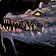

Übersicht
Level17–24
GebietThe Barrens
KategorieHordegebiet
TypClassic
Eingang: Wailing Caverns / Razorfen entrances. Die Gebietskarte findest du im Reiter „Gebietskarte“.
Bosse & Loot
Icons: bekannte Item-IDs nutzen Original-Wowhead-Icons; übrige Einträge bekommen mindestens ein passendes Slot-/Waffenicon statt eines kaputten Bildes.

Kresh
3 bekannte Loot-Einträge
Lady Anacondra
3 bekannte Loot-Einträge
Lord Cobrahn
3 bekannte Loot-Einträge
Deviate Faerie Dragon
2 bekannte Loot-Einträge
Lord Pythas
3 bekannte Loot-Einträge
Skum
3 bekannte Loot-Einträge
Lord Serpentis
4 bekannte Loot-Einträge
Verdan the Everliving
3 bekannte Loot-Einträge
Mutanus the Devourer
3 bekannte Loot-Einträge
Dungeonquests
Quelle: Wowhead Forever „Every Dungeon Quest“, aktualisiert 31.10.2026. Beta-Dungeons können noch unvollständig sein.
Allianzquests
Keine fraktionsspezifischen Quests in der lokalen Liste. Siehe Wowhead-Quelle unten.
Hordequests
Serpentbloom · Level 14Start: Thunder Bluff – Apothecary Zamah /way 34 21
Leaders of the Fang · Level 15Start: Thunder Bluff – Nara Wildmane /way 45 235 Vorquests ab The Forgotten Pools
Neutral / Klasse
Smart Drinks · Level 13Start: Ratchet – Mebok Mizzyrix /way 62 37Raptor Horns vorher
Trouble at the Docks · Level 14Start: Ratchet – Crane Operator Bigglefuzz /way 63 37
Deviate Hides · Level 13Start: Über dem WC-Eingang – Nalpak /way 46 35
Deviate Eradication · Level 15Start: Über dem WC-Eingang – Ebru /way 46 35
The Glowing Shard · Level 15Start: Drop von Mutanus the Devourer
The Barrens – Dungeon-Eingang

Marker: Wailing Caverns / Razorfen entrances
Die Karte zeigt das komplette Gebiet, nicht mehr nur eine schematische Platzhalterfläche.
Die Karte zeigt das komplette Gebiet, nicht mehr nur eine schematische Platzhalterfläche.